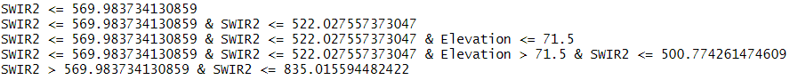

Chapter 10 Model-assisted estimation
In many cases ancillary information is available that could be useful to increase the accuracy of the estimated mean or total of the study variable. The ancillary variable(s) can be qualitative (i.e. classifications) or quantitative. As we have seen before, both types of ancillary variable can be used at the design stage, i.e. in selecting the sampling units, to improve the performance of the sampling strategy, for instance by stratification (Chapter 4), selecting sampling units with probabilities proportional to size (Chapter 8), or through balancing and/or spreading the sample on the covariates (Chapter 9). In this chapter I explain how these covariates can be used at the stage of estimation, once the data are collected.
In the design-based approach for sampling various estimators are developed that exploit one or more covariates. These estimators are derived from different superpopulation models of the study variable. A superpopulation model is a statistical model that can be used to generate an infinite number of populations, a superpopulation, through simulation. An example is the simulation of spatial populations using a geostatistical model, see Chapter 13. A superpopulation is a construct, it does not exist in reality. We assume that the population of interest is one of the populations that can be generated with the chosen model. The combination of probability sampling and estimators that are build on a superpopulation model, is referred to as the model-assisted approach. Also in the model-based approach a superpopulation model is used, however, its role is fundamentally different from that in the model-assisted approach, see Chapter 27. To stress the different use of the superpopulation model in the model-assisted approach this model is referred to as the “working model”, i.e. the superpopulation model that is used to derive a model-assisted estimator.
Breidt and Opsomer (2017) present an overview of model-assisted estimators derived from a general working model:
\[\begin{equation} Z_k = \mu(\mathbf{x}_k)+\epsilon_k\;, \tag{10.1} \end{equation}\]
with \(\mu(\mathbf{x}_k)\) the model mean for population unit \(k\) which is a function of the covariate values of that unit collected in vector \(\mathbf{x}_k = (1, x_{1,k}, \dots , x_{J,k})^{\mathrm{T}}\), and \(\epsilon_k\) a random variable with zero mean. Note that I use uppercase \(Z\) to distinguish the random variable \(Z_k\) of unit \(k\) from one realization of this random variable for unit \(k\) in the population of interest, \(z_k\). The model mean \(\mu(\mathbf{x}_k)\) can be a linear or a non-linear combination of the covariates. If the study variable and the covariate values were observed for all population units, all these data can be used to compute a so-called hypothetical population fit of the model parameters. These model parameters can then be used to compute estimates of the model means \(\mu(\mathbf{x}_k)\), denoted by \(m(\mathbf{x}_k)\), for all population units. For instance, with a (multiple) regression model \(m(\mathbf{x}_k)=\mathbf{x}_k^{\text{T}} \mathbf{b}\), with \(\mathbf{b}\) the vector with regression coefficients estimated from observations of the study variable \(z\) and the covariates on all population units. In practice we have a sample only, which is used to estimate \(m(\mathbf{x}_k)\) by \(\hat{m}(\mathbf{x}_k)\). For the multiple regression model \(\hat{m}(\mathbf{x}_k)= \mathbf{x}_k^{\text{T}} \hat{\mathbf{b}}\), with \(\hat{\mathbf{b}}\) the vector with regression coefficients estimated from the sample data. This leads to the generalised difference estimator (Wu and Sitter 2001):
\[\begin{equation} \hat{\bar{z}}_{\mathrm{dif}}=\frac{1}{N} \sum_{k=1}^N \hat{m}(\mathbf{x}_k) + \frac{1}{N} \sum_{k \in \mathcal{S}} \frac{z_k-\hat{m}(\mathbf{x}_k)}{\pi_k}\;, \tag{10.2} \end{equation}\]
with \(\pi_k\) the inclusion probability of unit \(k\). The first term is the population mean of model predictions of the study variable, the second term is the \(\pi\) estimator of the population mean of the residuals.
A wide variety of model-assisted estimators have been developed and tested in the past decades. They differ in the working model used to obtain the estimates \(\hat{m}(\mathbf{x}_k)\) in Equation (10.2). The best known class of model-assisted estimators is the generalised regression estimator that uses a linear model in prediction (Särndal, Swensson, and Wretman 1992). Alternative model-assisted estimators are the estimators using machine learning techniques for prediction. In the era of big data with a vastly increasing number of exhaustive data sets and a rapid development of machine learning techniques, these estimators have great potentials for spatial sample survey.
10.1 Generalised regression estimator
The working model of the generalised regression estimator is the heteroscedastic multiple linear regression model:
\[\begin{equation} Z_k = \mathbf{x}^{\mathrm{T}}_k \pmb{\beta}+\epsilon_k \;, \tag{10.3} \end{equation}\]
with \(\epsilon_k\) uncorrelated residuals, with zero mean and variance \(\sigma^2(\epsilon_k)\). Note that the variance of the residuals \(\sigma^2(\epsilon_k)\) need not be constant but may differ among the population units. If \(\{z_k,x_{1,k}, \dots , x_{J,k}\}\) were observed for all units \(k= 1, \dots , N\) in the population, the regression coefficients \(\pmb{\beta}\) would be estimated by
\[\begin{equation} \mathbf{b} = \left(\sum_{k=1}^N \frac{\mathbf{x}_k\mathbf{x}_k^{\mathrm{T}}}{\sigma^2(\epsilon_k)} \right)^{-1} \sum_{k=1}^N \frac{\mathbf{x}_k z_k}{\sigma^2(\epsilon_k)}\;, \tag{10.4} \end{equation}\]
with \(\mathbf{x}_k\) the vector \((1, x_{1,k}, \dots , x_{J,k})^{\mathrm{T}}\), and \(\sigma^2(\epsilon_k)\) the variance of the residual of unit \(k\). Similar to the distinction between model mean and population mean (see Chapter 27), here the model regression coefficients \(\pmb{\beta}\) are distinguished from the population regression coefficients \(\mathbf{b}\). The means \(m(\mathbf{x}_k)\) would then be computed by
\[\begin{equation} m(\mathbf{x}_k) = \mathbf{x}_k^{\mathrm{T}} \mathbf{b}\;. \tag{10.5} \end{equation}\]
If we have a probability sample from the population of interest, \(\mathbf{b}\) is estimated by replacing the population totals in Equation (10.4) by their \(\pi\) estimators:
\[\begin{equation} \hat{\mathbf{b}} = \left(\sum_{k \in \mathcal{S}} \frac{\mathbf{x}_k\mathbf{x}_k^{\mathrm{T}}}{\sigma^2(\epsilon_k) \pi_k} \right)^{-1} \sum_{k \in \mathcal{S}} \frac{\mathbf{x}_k z_k}{\sigma^2(\epsilon_k) \pi_k} \;, \tag{10.6} \end{equation}\]
The mean values \(m(\mathbf{x}_k)\) are now estimated by
\[\begin{equation} \hat{m}(\mathbf{x}_k) = \mathbf{x}_k^{\mathrm{T}} \hat{\mathbf{b}}\;. \tag{10.7} \end{equation}\]
Plugging Equation (10.7) into the generalised difference estimator, Equation (10.2), leads to the generalised regression estimator for the population mean:
\[\begin{equation} \hat{\bar{z}}_{\mathrm{regr}} = \frac{1}{N} \sum_{k=1}^N \mathbf{x}_k^{\mathrm{T}} \hat{\mathbf{b}} + \frac{1}{N} \sum_{k \in \mathcal{S}} \frac{z_k-\mathbf{x}^{\mathrm{T}}_k\hat{\mathbf{b}}} {\pi_k} \;. \tag{10.8} \end{equation}\]
This estimator can also be written as
\[\begin{equation} \hat{\bar{z}}_{\text{regr}}= \hat{\bar{z}}_{\pi}+\sum_{j=1}^J \hat{b}_j(\bar{x}_j-\hat{\bar{x}}_{j,\pi}) \;, \tag{10.9} \end{equation}\]
with \(\hat{\bar{z}}_{\pi}\) and \(\hat{\bar{x}}_{j,\pi}\) the \(\pi\) estimator of the study variable \(z\) and the \(j\)th covariate, respectively, \(\bar{x}_j\) the population mean of the \(j\)th covariate, and \(\hat{b}_j\) the estimated slope coefficient associated with the \(j\)th covariate. So the generalised regression estimate is equal to the \(\pi\) estimate when the estimated means of the covariates are equal to the population means. This is the rationale of balanced sampling (Chapter 9).
The alternative formulation of the regression estimator (Equation (10.9)) shows that we do not need to know the covariate values for all population units. Knowledge of the population means of the covariates is sufficient. This is because a linear relation is assumed between the study variable and the covariates. On the contrary, for non-linear working models such as a random forest model, exhaustive knowledge of the covariates is needed so that the estimated mean \(\hat{m}(\mathbf{x}_k)\) in Equation (10.2) can be computed for every unit in the population.
Särndal, Swensson, and Wretman (1992) worked out the generalised regression estimator for various superpopulation models, such as the simple and multiple linear regression model, the ratio model and the ANOVA model.
10.1.1 Simple and multiple regression estimators
The working model of the simple and multiple regression estimator is the homoscedastic linear regression model. The only difference with the heteroscedastic model (Equation (10.3)) is that the variance of the residuals is assumed constant: \(\sigma^2(\epsilon_k) = \sigma^2(\epsilon), k = 1 , \dots , N\).
In the simple linear regression model the mean is a linear combination of a single covariate, \(\mu(x_k)= \alpha + \beta\;x_k\). The simple linear regression model leads to the simple regression estimator. With simple random sampling this estimator for the population mean is
\[\begin{equation} \hat{\bar{z}}_{\text{regr}}= \bar{z}_{\mathcal{S}}+\hat{b}\left( \bar{x}-\bar{x}_{\mathcal{S}}\right) \;, \tag{10.10} \end{equation}\]
where \(\bar{z}_{\mathcal{S}}\) and \(\bar{x}_{\mathcal{S}}\) are the sample means of the study variable and the covariate, respectively, \(\bar{x}\) is the population mean of the covariate, and \(\hat{b}\) is the estimated slope coefficient:
\[\begin{equation} \hat{b}=\frac{\sum_{k \in \mathcal{S}} (x_k-\bar{x}_{\mathcal{S}})(z_k-\bar{z}_{\mathcal{S}})}{\sum_{k \in \mathcal{S}}(x_k-\bar{x}_{\mathcal{S}})^2} \;. \tag{10.11} \end{equation}\]
The rationale of the regression estimator is that when the estimated mean of the covariate is, for instance, smaller than the population mean of the covariate, then with a positive correlation between the study variable and covariate, also the estimated mean of the study variable is expected to be smaller than the population mean of the study variable. The difference between the population mean and estimated mean of the covariate can be used to improve the \(\pi\) estimate of the mean of \(z\) (which is for simple random sampling equal to the sample mean \(\bar{z}_{\mathcal{S}}\)), by adding a term proportional to the difference between the estimated mean and population mean of the covariate. As a scaling factor the estimated slope of the fitted regression line is used.
The sampling variance of this regression estimator can be estimated by computing first the regression residuals \(e_k= z_k - \hat{z}_k,\, i = 1 \dots n\) at the sampling units. To compute these residuals we also need an estimate of the intercept. With simple random sampling this intercept can be estimated by
\[\begin{equation} \hat{a} = \bar{z}_{\mathcal{S}} - \hat{b}\; \bar{x}_{\mathcal{S}}\;. \tag{10.12} \end{equation}\]
The sampling variance of the regression estimator of the population mean is approximately equal to the sampling variance of the \(\pi\) estimator of the mean of the model residuals,
\[\begin{equation} \widehat{V}\!\left(\hat{\bar{z}}_{\mathrm{regr}}\right)=\left(1-\frac{n}{N}\right)\frac{\widehat{S^{2}}(e)}{n} \;, \tag{10.13} \end{equation}\]
with \(\widehat{S^{2}}(e)\) the estimated population variance of the regression residuals
\[\begin{equation} \widehat{S^{2}}(e)=\frac{1}{n-1}\sum_{k \in \mathcal{S}} e_k^2 \;. \tag{10.14} \end{equation}\]
For simple random sampling with replacement from finite populations and simple random sampling of infinite populations, the finite population correction factor \(1-n/N\) must be dropped, see Chapter 3.
In the multiple linear regression model the mean is a linear function of multiple covariates. This model leads to the multiple regression estimator . With simple random sampling the population regression coefficients of this estimator can be estimated by
\[\begin{equation} \hat{\mathbf{b}} = \left(\sum_{k \in \mathcal{S}} \mathbf{x}_k\mathbf{x}_k^{\mathrm{T}} \right)^{-1} \sum_{k \in \mathcal{S}} \mathbf{x}_k z_k \;. \tag{10.15} \end{equation}\]
Comparison with the general estimator of the population regression coefficients (Equation (10.6)) shows that the variance of the residuals, \(\sigma^2(\epsilon_k)\), is missing as they are assumed constant, as well as the inclusion probabilities \(\pi_k\), which are equal for all population units with simple random sampling without replacement and simple random sampling from infinite populations.
The simple regression estimator is illustrated with Eastern Amazonia, see Section 1.3. The population mean of the aboveground biomass (AGB) is estimated by the simple regression estimator, using natural logarithms of MODIS short-wave infrared radiation (SWIR2) as a covariate.
A simple random sample without replacement of 100 units is selected, and the two population regression coefficients are estimated with Equation (10.15). t(X) computes the transpose of a matrix, function solve computes the inverse of a matrix, and the operator %*% is for multiplying two matrices.
n <- 100
set.seed(321)
units <- sample.int(nrow(gridAmazonia), size=n, replace=FALSE)
mysample <- gridAmazonia[units,c("AGB","lnSWIR2")]
X <- matrix(nrow=n, ncol=2, data=1)
X[,2] <- mysample$lnSWIR2
XXinv <- solve(t(X) %*% X)
Xz <- t(X) %*% mysample$AGB
print(ab <- t(XXinv %*% Xz)) [,1] [,2]
[1,] 1751.636 -237.1379The same estimates are obtained by ordinary least squares (OLS) fitting of the model with function lm.
lm_sample <- lm(AGB~lnSWIR2, data=mysample)
print(ab_mb <- coef(lm_sample))(Intercept) lnSWIR2
1751.6363 -237.1379 As already stressed above, the design-based estimates of the population regression coefficients are only equal to these model-based OLS estimates of the regression coefficients for equal probability sampling designs. Also be aware that the variance of the design-based estimates of the population regression coefficients is not equal to the model-based variance of the model regression coefficients. See Section (11.2.2.1) in Lohr (1999) for how to estimate the variance of the design-based estimates of the population regression coefficients.
Figure 10.1 shows the scatter plot for the sample and the fitted simple linear regression model.
Figure 10.1: Scatter plot and fitted simple linear regression model for aboveground biomass (AGB), using lnSWIR2 as predictor, for simple random sample.
The simple random sample is used to estimate the population mean of the study variable AGB by the simple regression estimator, and to approximate the sampling variance of the regression estimator. The residuals of the fitted model can be extracted with function residuals because in this case the OLS estimates of the regression coefficients are equal to the design-based estimates. With unequal inclusion probabilities the residuals must be computed by predicting the study variable for the selected units, using the design-based estimates of the regression coefficients, and subtracting the observations of the study variable.
mx_pop <- mean(gridAmazonia$lnSWIR2)
mx_sam <- mean(mysample$lnSWIR2)
mz_sam <- mean(mysample$AGB)
mz_regr <- mz_sam+ab[2]*(mx_pop-mx_sam)
e <- residuals(lm_sample)
S2e <- var(e)
N <- nrow(gridAmazonia)
se_mz_regr <- sqrt((1-n/N)*S2e/n)The difference \(\delta(x)\) between the population mean of the covariate lnSWIR2 (6.415) and its estimated mean (6.347) equals 0.068. We may expect the difference between the unknown population mean of the study variable AGB and its sample mean (246.51) to be equal to \(\delta(x)\), multiplied by the estimated slope of the line, which equals -237.1. The result, -16.1039, is added to the simple random sample estimate.
The estimated approximate standard error of the regression estimator equals 4.458. The approximated variance is a simplification of a more complicated approximation derived from writing the regression estimator of the population total as a weighted sum of the \(\pi\) expanded observations (Särndal, Swensson, and Wretman (1992), Equation (6.5.9)),
\[\begin{equation} \hat{\bar{z}}_{\mathrm{regr}}=\frac{1}{N}\sum_{k \in \mathcal{S}} g_k \frac{z_k}{\pi_k}\;, \tag{10.16} \end{equation}\]
with \(g_k\) the weight for unit \(k\). For simple random sampling the weights are equal to (Särndal, Swensson, and Wretman (1992), Equation (6.5.12))
\[\begin{equation} g_k = 1+\frac{(\bar{x}-\bar{x}_{\mathcal{S}})(x_k-\bar{x}_{\mathcal{S}})}{\widehat{S^2}(x)}\;. \tag{10.17} \end{equation}\]
These weights are now computed.
S2x <- sum((mysample$lnSWIR2-mean(mysample$lnSWIR2))^2)/n
g <- 1+((mx_pop-mx_sam)*(mysample$lnSWIR2-mx_sam))/S2xThe sample mean of the weights equals one,
mean(g)[1] 1and the sample mean of the product of the weights and the covariate \(x\) equals the population mean of the covariate.
all.equal(mean(g*mysample$lnSWIR2),mean(gridAmazonia$lnSWIR2))[1] TRUEIn other words, the sample is calibrated on the known population means. The variance of the regression estimator of the population mean can be approximated by (Särndal, Swensson, and Wretman (1992), Section 6.6)
\[\begin{equation} \widehat{V}\!\left(\hat{\bar{z}}_{\mathrm{regr}}\right)=\left(1-\frac{n}{N}\right)\frac{\sum_{k \in \mathcal{S}} g_k^2e_k^2}{n(n-1)} \;. \tag{10.18} \end{equation}\]
Comparing this with Equation (10.13) shows that in the first approximation we assumed that all weights are equal to one.
The alternative approximate standard error is computed in the next code chunk.
S2ge <- sum(g^2*e^2)/(n-1)
print(se_mz_regr <- sqrt((1-n/N)*S2ge/n))[1] 4.546553The regression estimator and its standard error can be computed with package survey (Lumley 2020). After specifying the sampling design with function svydesign, function calibrate is used to calibrate the sample on the known population totals \(N\) and \(t(x) = \sum_{k=1}^N x_k\), with \(x_k\) the value of covariate lnSWIR2 for unit \(k\).
library(survey)
mysample$fpc <- N
design_si <- svydesign(id=~1, data=mysample, fpc=~fpc)
populationtotals <- c(N,sum(gridAmazonia$lnSWIR2))
mysample_cal <- calibrate(design_si, formula=~lnSWIR2,
population=populationtotals, calfun="linear")The calibrated weights can be extracted with function weights.
g <- weights(mysample_cal)
all.equal(sum(g),N)[1] TRUEThe sample sum of the product of the weights and the covariate equals the population total of the covariate.
all.equal(sum(g*mysample$lnSWIR2),sum(gridAmazonia$lnSWIR2))[1] TRUEFinally, the population mean can be estimated with function svymean. This is simply the sample sum of the product of the weights and the study variable AGB, divided by \(N\).
svymean(~AGB, mysample_cal) mean SE
AGB 230.41 4.5466The standard error is computed with Equation (10.18). Figure 10.2 shows the sampling distribution of the simple regression estimator along with the distribution of the \(\pi\) estimator, obtained by repeating simple random sampling of 100 units and estimation 10,000 times.
Figure 10.2: Sampling distribution of simple regression estimator, using lnSWIR2 as a predictor, and \(\pi\) estimator of mean aboveground biomass (AGB) in Eastern Amazonia, for simple random sampling without replacement of size 100.
The average of the 10,000 regression estimates equals 224.702. The population mean of the study variable AGB equals 225.048, so the estimated bias of the regression estimator equals -0.347, which is negligibly small related to the estimated population mean. The variance of the 10,000 regression estimates equals 26.936, and the average of the 10,000 estimated approximate variances using Equation (10.18) equals 27.105. The gain in precision due to the regression estimator, quantified by the ratio of the variance of the \(\pi\) estimator to the variance of the regression estimator equals 3.163.
For simple random sampling the ratio of the variances of the simple regression estimator and\(\pi\) estimator is independent of the sample size and equals \(1-r^2\), with \(r\) the correlation coefficient of the study variable and covariate (Särndal, Swensson, and Wretman (1992), p. 274).
Using multiple covariates in the regression estimator is straightforward with the function calibrate of package survey. As a first step the best model is selected with function regsubsets of package leaps (Thomas Lumley (based on Fortran code by Alan Miller) 2020).
library(leaps)
n <- 100
set.seed(321)
units <- sample.int(nrow(gridAmazonia), size=n, replace=FALSE)
covars <- c("AGB","lnSWIR2","Terra_PP","Prec_dm","Elevation","Clay")
mysample <- gridAmazonia[units,covars]
models <- regsubsets(AGB~., data=mysample, nvmax=4)
res.sum <- summary(models)
res.sum$outmat lnSWIR2 Terra_PP Prec_dm Elevation Clay
1 ( 1 ) "*" " " " " " " " "
2 ( 1 ) "*" "*" " " " " " "
3 ( 1 ) "*" "*" " " "*" " "
4 ( 1 ) "*" "*" "*" "*" " " The best model with one predictor is the model with lnSWIR2, the best model with two predictors is the one with lnSWIR2 and Terra_PP, etc. Of these models the third model, i.e. the model with lnSWIR2, Terra_PP and Elevation is the best when using adjusted \(R^2\) as a selection criterion.
which.max(res.sum$adjr2)[1] 3The standard error of the estimated mean of AGB is somewhat reduced by adding the covariates Terra_PP and Elevation to the regression estimator.
mysample$fpc <- nrow(gridAmazonia)
design_si <- svydesign(id=~1, data=mysample, fpc=~fpc)
totals <- c(nrow(gridAmazonia),sum(gridAmazonia$lnSWIR2),
sum(gridAmazonia$Terra_PP),sum(gridAmazonia$Elevation))
mysample_cal <- calibrate(design_si, formula=~lnSWIR2+Terra_PP+Elevation,
population=totals, calfun="linear")
svymean(~AGB, mysample_cal) mean SE
AGB 230.54 4.2224Another interesting package for model-assisted estimation is package mase (McConville et al. 2018). The regression estimate can be computed with function greg.
library(mase)
covars <- c("lnSWIR2","Terra_PP","Elevation")
res <- greg(y=mysample$AGB, xsample=mysample[covars],
xpop=gridAmazonia[covars], pi=rep(n/N,n),
var_est=TRUE, var_method="LinHTSRS", model="linear")
res$pop_mean[1] 230.5407The multiple regression estimate is equal to the estimate obtained with function calibrate of package survey. The estimated standard error equals
sqrt(res$pop_mean_var) [,1]
[1,] 4.207809which is slightly smaller than the standard error computed with package survey. This standard error is computed by ignoring the g-weights (McConville 2018). In an exercise the two approximate standard errors are compared in a sampling experiment.
mlr <- lm(AGB~lnSWIR2+Terra_PP+Elevation,data=mysample)
e <- residuals(mlr)
S2e <- var(e)
print(se <- sqrt((1-n/N)*S2e/n))10.1.2 Penalised least squares estimation
In the previous section I first selected a best subset of covariates before using these covariates in estimating the population regression coefficients. The alternative is to skip the selection of the best model, and to estimate the population regression coefficients of all covariates by penalised least squares estimation (PLS). In PLS a penalty equal to the sum of the absolute or squared values of the population regression coefficients is added to the minimisation criterion, see McConville (2018) for details. PLS is implemented in function gregElasticNet of package mase.
covars <- c("lnSWIR2","Terra_PP","Prec_dm","Elevation","Clay")
res <- gregElasticNet(
y=mysample$AGB, xsample=mysample[covars],
xpop=gridAmazonia[covars], pi=rep(n/N,n),
var_est=TRUE, var_method="LinHTSRS", model="linear",
lambda="lambda.min", cvfolds=100)
signif(res$coefficients,4)(Intercept) lnSWIR2 Terra_PP Prec_dm Elevation Clay
-71.07000 -2.83800 0.02204 0.52710 -0.03507 0.13630 All five covariates are used in prediction, but the coefficients associated with these predictors are small except for lnSWIR2.
As shown below, the estimated standard error is considerably larger than the standard error obtained with lnSWIR2, Terra_PP and Elevation as predictors. In this case the elastic net regression estimator works not as well as the multiple regression estimator using the best subset of the covariates.
sqrt(res$pop_mean_var) s1
s1 6.207637Exercises
- Write an R script to
- Select a simple random sample without replacement of size 50 from Eastern Amazonia. Compute the regression estimator of the population mean of AGB and its standard error “by hand,” using lnSWIR2 as a covariate (so do not not use package survey). Use Equation (10.13) to estimate the standard error.
- Use the same sample to compute the regression estimator with functions
calibrateandsvymeanof package survey. The regression estimate and its standard error can be extracted from the output object ofsvymeanwith methodscoefandSE, respectively. - Repeat both estimation procedures 1000 times (write a for-loop). Check that the 2 \(\times\) 1000 estimated population means obtained with both estimators are all equal (use function
all.equal), and compute summary statistics of the two approximated standard errors. Which approximate standard error estimator has the largest mean value?
- Select a simple random sample without replacement of size 50 from Eastern Amazonia. Compute the regression estimator of the population mean of AGB and its standard error “by hand,” using lnSWIR2 as a covariate (so do not not use package survey). Use Equation (10.13) to estimate the standard error.
- Write an R script to
- Compute the sampling variance of the simple regression estimator of the mean of AGB, using lnSWIR2 as a covariate, for simple random sampling and sample sizes of 10, 25 and 100, assuming that the population regression coefficients are perfectly known. Hint: fit a simple linear regression model on all data, and compute the population variance of the residuals.
- Select 10,000 times a simple random sample with replacement of size 10 (use a for-loop). Use each sample to estimate the population mean of AGB with the simple regression estimator (using sample estimates of the population regression coefficients), and estimate the approximate variance of the estimator of the mean. Compute the variance of the 10,000 regression estimates and the average of the 10,000 approximate variance estimates. Repeat this for sample sizes 25, 100.
- Compute for each sample size the difference between the experimental variance (variance of the 10,000 regression estimates) and the variance obtained with the population fit of the regression model as a proportion of the experimental variance. Explain what you see.
- Compute for each sample size the difference between the average of the 10,000 approximated variances and the experimental variance, as a proportion of the experimental variance. Explain what you see.
- Compute the sampling variance of the simple regression estimator of the mean of AGB, using lnSWIR2 as a covariate, for simple random sampling and sample sizes of 10, 25 and 100, assuming that the population regression coefficients are perfectly known. Hint: fit a simple linear regression model on all data, and compute the population variance of the residuals.
10.1.3 Regression estimator with stratified simple random sampling
With stratified simple random sampling there are two regression estimators, the separate and the combined regression estimator. In the first estimator the regression estimator for simple random sampling is applied at the level of the strata. This implies that for each stratum separately a vector with population regression coefficients \(\mathbf{b}_h\) is estimated. The regression estimates of the stratum means are then combined by computing the weighted average, using the relative sizes of the strata as weights:
\[\begin{equation} \hat{\bar{z}}_{\mathrm{sregr}}=\sum_{h=1}^H w_h \hat{\bar{z}}_{\text{regr,}h} \;, \tag{10.19} \end{equation}\]
with, for the simple linear estimator
\[\begin{equation} \hat{\bar{z}}_{\text{regr,}h} = \bar{z}_{\mathcal{S}h}+\hat{b}_h\left( \bar{x}_h-\bar{x}_{\mathcal{S}h}\right) \;, \tag{10.20} \end{equation}\]
with \(\bar{z}_{\mathcal{S}h}\) and \(\bar{x}_{\mathcal{S}h}\) the stratum sample means of the study variable and covariate, respectively, \(\bar{x}_h\) the mean of the covariate in stratum \(h\), and \(\hat{b}_h\) the estimated slope coefficient for stratum \(h\).
The variance of this separate regression estimator of the population mean can be estimated by first estimating the variances of the regression estimators of the stratum means using Equation (10.13), and then combining these variances using Equation (4.4).
The separate regression estimator is illustrated with Eastern Amazonia. Biomes are used as strata. There are four biomes, the levels of which are given short names using function levels.
gridAmazonia$Biome <- as.factor(gridAmazonia$Biome)
levels(gridAmazonia$Biome)[1] "Mangroves"
[2] "Tropical & Subtropical Dry Broadleaf Forests"
[3] "Tropical & Subtropical Grasslands, Savannas & Shrublands"
[4] "Tropical & Subtropical Moist Broadleaf Forests" biomes <- c("Mangrove", "Forest.dry","Grassland","Forest.moist")
levels(gridAmazonia$Biome) <- biomesMoist forest is by far the largest stratum, it covers 92% of the area. Mangrove, Forest.dry and Grassland cover 0.4%, 2.3% and 5.5% of the area, respectively. A stratified simple random sample of size 100 is selected using function strata of package sampling, see Chapter 4. I chose five units as a minimum sample size. Note that the stratum sample sizes are not proportional to their size.
library(sampling)
ord <- unique(gridAmazonia$Biome)
N_h <- table(gridAmazonia$Biome)
n_h <- c(5,5,5,85)
set.seed(314)
units <- sampling::strata(gridAmazonia, stratanames="Biome",
size=n_h[ord], method="srswor")
mysample <- getdata(gridAmazonia,units)As a first step in estimation, for each stratum the mean of the covariate over all units in a stratum (population mean per stratum) and the sample means of the study variable and covariate are computed.
mx_h_pop <- tapply(gridAmazonia$lnSWIR2, INDEX=gridAmazonia$Biome, FUN=mean)
mzh_sam <- tapply(mysample$AGB, INDEX=mysample$Biome, FUN=mean)
mx_h_sam <- tapply(mysample$lnSWIR2, INDEX=mysample$Biome, FUN=mean)The next step is to estimate the regression coefficients per stratum. This is done in a for-loop. The estimated slope coefficient is used to compute the regression estimator per stratum. The residuals are extracted to approximate the variance of the regression estimator per stratum.
b_h <- mz_h_regr <- v_mz_h_regr <- numeric(length=4)
for (i in 1:4) {
subsam <- subset(mysample, mysample$Biome==levels(gridAmazonia$Biome)[i])
lm_sample <- lm(AGB~lnSWIR2, data=subsam)
b_h[i] <- coef(lm_sample)[2]
mz_h_regr[i] <- mzh_sam[i]+b_h[i]*(mx_h_pop[i]-mx_h_sam[i])
e <- residuals(lm_sample)
S2e_h <- var(e)
v_mz_h_regr[i] <- (1-n_h[i]/N_h[i])*S2e_h/n_h[i]
}Finally, the separate regression estimate is computed as a weighted average of the regression estimates per stratum.
w_h <- N_h/sum(N_h)
print(mz_sepreg <- sum(w_h*mz_h_regr))[1] 223.9426The standard error of the separate regression estimator is computed by the square root of the pooled variances of the regression estimator per stratum, using the squared relative size of the strata as weights.
sum(w_h^2*v_mz_h_regr) %>% sqrt(.)[1] 5.077558The separate regression estimator can be computed with package survey. The computation of the population totals merits special attention. For the simple regression estimator using simple random sampling these totals are the total number of populations units and the population total of the covariate lnSWIR2. These are the population totals associated with the columns of the design matrix that is constructed with function lm to estimate the regression coefficients. The column with ones results in an estimated intercept, the column with lnSWIR2 values in an estimated slope.
We do not have a simple random sample, but a stratified simple random sample. The model that is fitted now is an ANCOVA model with factor Biome and covariate lnSWIR2.
ancova <- lm(AGB~Biome*lnSWIR2, data=mysample)R uses the so-called cornerstone representation of the ANCOVA model. The reference level is stratum Mangrove. The question is what population totals must be assigned to the function calibrate with this ANCOVA model. This can be determined by printing the design matrix that is used to fit the ANCOVA model. Only the first two rows are printed.
designmat <- model.matrix(ancova, mysample) (Intercept) BiomeForest.dry BiomeGrassland BiomeForest.moist lnSWIR2
[1,] 1 0 0 1 6.307024
[2,] 1 0 0 1 6.236278
BiomeForest.dry:lnSWIR2 BiomeGrassland:lnSWIR2 BiomeForest.moist:lnSWIR2
[1,] 0 0 6.307024
[2,] 0 0 6.236278With this model formulation the first population total is the total number of population units. The second, third and fourth population totals are the number of population units in stratum levels 2, 3 and 4. The fifth population total is the population total of covariate lnSWIR2, and the sixth, seventh and eighth population totals are the totals of covariate lnSWIR2 in stratum levels 2, 3 and 4.
N_h <- as.numeric(N_h)
lut <- data.frame(Biome=biomes,N_h)
mysample <- merge(x=mysample, y=lut)
design_stsi <- svydesign(id=~1, strata=~factor(Biome), data=mysample, fpc=~N_h)
tx_pop <- sum(gridAmazonia$lnSWIR2)
tx_h_pop <- N_h*mx_h_pop
totals <- c(sum(N_h),N_h[c(2,3,4)],tx_pop,tx_h_pop[c(2,3,4)])
names(totals) <- names(coef(ancova))
mysample_cal <- calibrate(
design_stsi, formula=~Biome*lnSWIR2,
population=totals, calfun="linear")
svymean(~AGB, mysample_cal) mean SE
AGB 223.94 5.8686names(totals) <- names(coef(ancova)) is not strictly needed. This is just to suppress a warning that the names of the numeric with the population totals does not match the names of the columns of the design matrix. As a consequence we do not need to fit the ANCOVA model either.
Alternatively, we may use the following formula in function lm.
ancova2 <- lm(AGB~0+Biome/lnSWIR2, data=mysample)
designmat <- model.matrix(ancova, mysample) (Intercept) BiomeForest.dry BiomeGrassland BiomeForest.moist lnSWIR2
[1,] 1 0 0 1 6.307024
[2,] 1 0 0 1 6.236278
BiomeForest.dry:lnSWIR2 BiomeGrassland:lnSWIR2 BiomeForest.moist:lnSWIR2
[1,] 0 0 6.307024
[2,] 0 0 6.236278With this formula the population totals are the number of population units in stratum levels 1, 2, 3 and 4, and the population totals of covariate lnSWIR2 per stratum.
totals <- c(N_h,tx_h_pop)
names(totals) <- names(coef(ancova2))
mysample_cal <- calibrate(
design_stsi, formula=~0+Biome/lnSWIR2, population=totals,
calfun="linear")
svymean(~AGB, mysample_cal) mean SE
AGB 223.94 5.8686Recall the alternative formulation of the regression estimator, Equation (10.16), and that the sample sum of the \(\pi\)-expanded \(x\)-values multiplied by the calibrated weights \(g_k\) are equal to the population totals. This explains why the population totals should match the columns of the design matrix.
10.1.3.1 Combined regression estimator
The alternative to the separate simple regression estimator is the combined simple regression estimator
\[\begin{equation} \hat{\bar{z}}_{\mathrm{cregr}} = \hat{\bar{z}}_{\pi}+\hat{b}\left( \bar{x}-\hat{\bar{x}}_{\pi}\right) \;, \tag{10.21} \end{equation}\]
with \(\hat{b}\) the estimated slope coefficient, estimated by Equation (10.6), discarding the variance of the residuals \(\sigma^2(\epsilon_k)\) as they are assumed constant, and using the appropriate inclusion probabilities which differ among the strata, and \(\hat{\bar{z}}_{\pi}\) and \(\hat{\bar{x}}_{\pi}\) the \(\pi\) estimators of the population mean of the study variable and the covariate with stratified simple random sampling, respectively. Working (10.6) out for stratified simple random sampling yields
\[\begin{equation} \hat{b}=\frac{w^2_h \widehat{S^2}_h(z,x)}{w^2_h \widehat{S^2}_h(x)} \tag{10.22} \end{equation}\] with \(\widehat{S^2}_h(z,x)\) the estimated covariance of the study variable and teh covariate in strtaum \(h\), and \(\widehat{S^2}_h(x)\) the estimated variance of the covariate.
In the combined simple regression estimator only one regression coefficient \(b\) is estimated, the slope coefficient for the entire population. This combined regression estimator is recommended when the stratum sample sizes are small as in our case, so that the estimated regression coefficients per stratum, \(\hat{b}_h\), become unreliable.
The approximate variance of the combined regression estimator can be estimated as follows:
- Compute residuals: \(e_k = z_k - (\hat{a} + \hat{b} x_k)\), with \(\hat{a}\) and \(\hat{b}\) the estimated regression coefficients for the whole population.
- Estimate for each stratum the variance of the estimator of the mean of the residuals: \(\widehat{V}\!\left(\hat{\bar{e}}_h\right)=\widehat{S^{2}}_h(e)/n_h\), with \(\widehat{S^{2}}_h(e)\) the estimated variance of the residuals in stratum \(h\).
- Combine the estimated variances per stratum: \(\widehat{V}\!\left(\hat{\bar{z}}_{\text{cregr}}\right)=\sum_{h=1}^Hw^2_h\widehat{V}\!\left(\hat{\bar{e}}_h\right)\).
The next code chunks show the estimation procedure. First the population means of the study variable AGB and of the covariate lnSWIR2 are estimated by the \(\pi\) estimator, see Chapter 4.
mz_h_HT <- tapply(mysample$AGB, INDEX=mysample$Biome, FUN=mean)
mx_h_HT <- tapply(mysample$lnSWIR2, INDEX=mysample$Biome, FUN=mean)
mz_HT <- sum(w_h*mz_h_HT)
mx_HT <- sum(w_h*mx_h_HT)The next step is to estimate the population regression coefficients, using Equation (10.6) in which the variances \(\sigma^2(\epsilon_k)\) can be dropped, as these are assumed constant. The inclusion probabilities are in the column Prob of mysample.
W <- diag(x=1/mysample$Prob, nrow=n, ncol=n)
X <- matrix(nrow=n, ncol=2, data=1)
X[,2] <- mysample$lnSWIR2
XWXinv <- solve(t(X) %*% W %*% X)
XWz <- t(X) %*% W %*% mysample$AGB
print(ab <- t(XWXinv %*% XWz)) [,1] [,2]
[1,] 1678.268 -226.6772Note that the same estimates are obtained by model-based estimation, using weighted least squares, based on the assumption of that the variances \(\sigma^2(\epsilon_k)\) are proportional to the inclusion probabilities (which is a weird assumption).
lm_wls <- lm(AGB~lnSWIR2, weights=1/Prob, data=mysample)
coef(lm_wls)(Intercept) lnSWIR2
1678.2684 -226.6772 Finally the combined regression estimate is computed.
print(mz_combreg <- mz_HT+ab[2]*(mx_pop-mx_HT))[1] 224.1433To approximate the variance of the combined regression estimator first the residuals are computed. Then these residuals are used to estimate the spatial variance of the residuals within the strata, \(\widehat{S^{2}}_h(e)\), and the variance of the estimator of the mean of the residuals, \(\widehat{V}\!\left(\hat{\bar{e}}_h\right)\).
mysample$e <- mysample$AGB-(ab[1]+ab[2]*mysample$lnSWIR2)
v_me_h <- numeric(length=4)
for (i in 1:4) {
subsam <- subset(mysample, mysample$Biome==levels(gridAmazonia$Biome)[i])
S2e_h <- var(subsam$e)
v_me_h[i] <- (1-n_h[i]/N_h[i])*S2e_h/n_h[i]
}
print(se_mz_combreg <- sqrt(sum(w_h^2*v_me_h)))[1] 5.122518Computing the combined regression estimator with package survey proceeds as follows.
design_stsi <- svydesign(id=~1, strata=~factor(Biome), data=mysample, fpc=~N_h)
totals <- c(nrow(gridAmazonia),sum(gridAmazonia$lnSWIR2))
mysample_cal <- calibrate(
design_stsi, formula=~lnSWIR2, population=totals,
calfun="linear")
svymean(~AGB, mysample_cal) mean SE
AGB 224.14 5.8707Function calibrate computes the regression estimate and its standard error with the calibrated weights \(g_k\) (Särndal, Swensson, and Wretman (1992), Equation (6.5.12)). This explains the difference between the two standard errors.
[1] 5.87073710.2 Ratio estimator
In some cases it is reasonable to assume that the fitted line passes through the origin. An example is the case study on poppy area in Kandahar (Chapter 8). The covariate is the agricultural area within the 5 km \(\times\) 5 km squares that serve as sampling units. It is reasonable to assume that when the covariate equals zero, also the poppy area is zero. So, if we have an estimate of the ratio of the total poppy area in the population to the total agricultural area in the population, and besides know the total agricultural area in the population, the total poppy area in the population can be estimated by multiplying the estimated ratio with the known population total agricultural area:
\[\begin{equation} \hat{t}_{\mathrm{ratio}}(z)=\frac{\hat{t}_{\pi}(z)}{\hat{t}_{\pi}(x)} \;t(x) = \hat{b} \;t(x)\;, \tag{10.23} \end{equation}\]
with \(\hat{t}_{\pi}(z)\) and \(\hat{t}_{\pi}(x)\) the \(\pi\) estimators of the total of the study variable (poppy area) and ancillary variable (agricultural area), respectively, and \(t(x)\) the total of the ancillary variable, which must be known.
The working model of the ratio estimator is a heteroscedastic model, i.e. a model with non-constant variance, without intercept (see Exercise 3, hereafter):
\[\begin{equation} \begin{split} Z(x_k) &= \beta \;x_k + \epsilon_k \\ \sigma^2(\epsilon_k) &= \sigma^2 x_k \end{split} \;, \tag{10.24} \end{equation}\]
with \(\beta\) the slope of the line, and \(\sigma^2\) a constant (variance of residual for \(x_k = 1\)). The residual variance is assumed proportional to the covariate \(x\).
Equation (10.23) is a general estimator that can be used for any probability sampling design, not only for simple random sampling. For simple random sampling the coefficient \(b\) is estimated by the ratio of the sample means of \(z\) and \(x\).
For simple random sampling the sampling variance of the ratio estimator of the population total can be approximated by
\[\begin{equation} \widehat{V}\!\left(\hat{t}_{\mathrm{ratio}}(z)\right)=N^2\frac{\widehat{S^{2}}(e)}{n} \;, \tag{10.25} \end{equation}\]
with \(\widehat{S^{2}}(e)\) the estimated variance of the residuals \(e_k=z_k-\hat{b}x_k\):
\[\begin{equation} \widehat{S^{2}}(e)=\frac{1}{n-1}\sum_{k \in \mathcal{S}}e_k^2 \;. \tag{10.26} \end{equation}\]
For simple random sampling without replacement from finite populations Equation (10.25) must be multiplied by \(\left(1-\frac{n}{N}\right)\).
In R the ratio estimator for the total poppy area and the estimator of its variance for a simple random sample without replacement can be computed as follows.
load("data/Kandahar.RData")
n <- 50
N <- nrow(grdKandahar)
units <- sample.int(N, size=n, replace=FALSE)
mysample <- grdKandahar[units,]
b <- mean(mysample$poppy)/mean(mysample$agri)
tx_pop <- sum(grdKandahar$agri)
print(tz_ratio <- b*tx_pop)[1] 55009.69e <- mysample$poppy-b*mysample$agri
print(se_tz_ratio <- sqrt(N^2*(1-(n/N))*var(e)/n))[1] 18847.31An improved variance approximation is obtained with Equation (10.18). For the ratio model and simple random sampling the calibrated weights are equal to (Särndal, Swensson, and Wretman (1992), p. 248)
\[\begin{equation} g = \frac{t(x)}{\hat{t}_{\pi}(x)} \;, \tag{10.27} \end{equation}\]
with \(t(x)\) the population total of the covariate, and \(\hat{t}_{\pi}(x)\) the \(\pi\) estimate of the population total of the covariate.
pi <- n/N
tx_HT <- sum(mysample$agri/pi)
g <- tx_pop/tx_HT
S2ge <- sum(g^2*e^2)/(n-1)
print(se_tz_ratio <- sqrt(N^2*(1-n/N)*S2ge/n))[1] 17149.62The ratio estimate and the estimated standard error of the ratio estimator can be computed with package survey as follows.
mysample$N <-N
design_si <- svydesign(id=~1, data=mysample, fpc=~N)
b <- svyratio(~poppy, ~agri, design=design_si)
predict(b, total=tx_pop)$total
agri
poppy 55009.69
$se
agri
poppy 17149.62Figure 10.3: Sampling distribution of ratio estimator and \(\pi\) estimator of total poppy area (ha) in Kandahar with simple random sampling of size 50.
Figure 10.3 shows the sampling distribution of the ratio estimator and \(\pi\) estimator, obtained by repeating simple random sampling of size 50 and estimation 10,000 times. The average of the 10,000 ratio estimates of the total poppy area equals 62512. The population total of poppy equals 63038, so the estimated bias of the ratio estimator equals -526. The boxplots in Figure 10.3 show that the ratio estimator has less extreme outliers. The standard deviation of the 10,000 ratio estimates equals 24177. The gain in precision due to the ratio estimator, quantified by the ratio of the variance of the \(\pi\) estimator to the variance of the ratio estimator equals 1.5.
Exercises
- Write an R script to compute the ratio of the population total poppy area and population total agricultural area (\(t(z)/t(x)\)). Then use all data to fit a linear model without intercept for the poppy area, using the agricultural area as a covariate, assuming that the variance of the residuals is proportional to the agricultural area (heteroscedastic model). Hint: use function
lmwith argumentformula = poppy ~ agri-1and argumentweights=1/agri. Also fit a model without intercept, assuming a constant variance of the residuals (homoscedastic model). Compare the estimated slopes of the two models with the ratio of the total poppy area and total agricultural area.
10.2.1 Ratio estimators with stratified simple random sampling
With stratified simple random sampling, there are, similar to the regression estimator, two options: either estimate the ratios separately for the strata, or estimate a combined ratio. The separate ratio estimator of the population total is
\[\begin{equation} \hat{t}_{\mathrm{sratio}}(z)=\sum_{h=1}^H \hat{t}_{\mathrm{ratio},h}(z) \;, \tag{10.28} \end{equation}\]
with
\[\begin{equation} \hat{t}_{\mathrm{ratio},h}(z)=\frac{\hat{t}_{\pi,h}(z)}{\hat{t}_{\pi,h}(x)} t_h(x) \;, \tag{10.29} \end{equation}\]
in which \(\hat{t}_{\pi,h}(z)\) and \(\hat{t}_{\pi,h}(x)\) are the \(\pi\) estimators of the population total of the study variable and the covariate for stratum \(h\), respectively.
The combined ratio estimator is
\[\begin{equation} \hat{t}_{\mathrm{cratio}}(z)=\frac{\sum_{h=1}^H\hat{t}_{\pi,h}(z)}{\sum_{h=1}^H\hat{t}_{\pi,h}(x)} t(x) \;. \tag{10.30} \end{equation}\]
The code chunks below show how the combined and separate regression estimate can be computed with package survey. First two equal-sized strata are computed using the median of the covariate agri as a stratum break. Stratum sample sizes are computed, and a stratified simple random sample without replacement is selected.
breaks <- quantile(grdKandahar$agri,probs=0.5)
grdKandahar$stratum <- findInterval(grdKandahar$agri,breaks)+1
N_h <- table(grdKandahar$stratum)
n_h <- round(n*N_h/sum(N_h))
set.seed(314)
units <- sampling::strata(grdKandahar, stratanames="stratum",
size=n_h, method="srswor")
mysample <- getdata(grdKandahar,units)The stratum sizes N_h are added to mysample, function svydesign specifies the sampling design, function svyratio estimates the population ratio and its variance, and finally function predict estimates the population total.
lut <- data.frame(stratum=c(1,2),N_h)
mysample <- merge(x=mysample, y=lut)
design_stsi <- svydesign(id=~1,strata=~stratum, data=mysample, fpc=~Freq)
common <- svyratio(~poppy, ~agri, design_stsi, separate=FALSE)
predict(common, total=sum(grdKandahar$agri))$total
agri
poppy 28389.02
$se
agri
poppy 8845.847The same estimate is obtained with function calibrate.
mysample_cal <- calibrate(design_stsi, ~agri-1, population=tx_pop, variance=1)
svytotal(~poppy, mysample_cal) total SE
poppy 28389 8845.8Computing the separate ratio estimator goes along the same lines. Function svyratio with argument separate = TRUE estimates the ratio and its variance for each stratum separately. To predict the population total the stratum totals of the covariate must be assigned to argument total of function predict.
separate <- svyratio(~poppy, ~agri, design_stsi, separate=TRUE)
tx_h_pop <- tapply(grdKandahar$agri, INDEX=grdKandahar$stratum, FUN=sum)
predict(separate, total=tx_h_pop)$total
agri
poppy 28331.32
$se
agri
poppy 8882.49210.2.2 Poststratified estimator
In stratified random sampling (Chapter 4) the population is divided into several disjoint subpopulations, and from each subpopulation a probability sample is selected. The subpopulations then serve as strata. The larger the difference in the stratum means and the smaller the variance within the strata, the larger the gain in precision compared to simple random sampling, see Section 4.1.2.
The alternative to using the subpopulations as strata at the stage of sampling is to use them as poststrata in estimating the population mean. For instance, if we have selected a simple random sample from a spatial population, and we have a map of subpopulations possibly related to the study variable, then these subpopulations still can be used in the poststratified estimator. What only needs to be done is to classify the selected units. Hereafter the subpopulations that serve as poststrata are referred to as groups.
For any probability sampling design the population mean can be estimated by
\[\begin{equation} \hat{\bar{z}}_{\text{pos}}= \sum_{g=1}^{G} w_{g}\frac{\hat{t}_g(z)}{\widehat{N}_{g}} = \sum_{g=1}^{G} w_{g}\frac{\sum_{k \in \mathcal{S}_g}\frac{z_{k}}{\pi_k}} {\sum_{k \in \mathcal{S}_g}\frac{1}{\pi_k}} \;, \tag{10.31} \end{equation}\]
where \(\mathcal{S}_g\) is the sample from group \(g\), \(w_{g}=N_g/N\) is the relative size of group \(g\), \(\hat{t}_g(z)\) is the estimated total of the study variable for group \(g\), \(\widehat{N}_{g}\) is the estimator of the size of group \(g\), \(n_{g}\) is the number of sampling units in group \(g\) and \(\pi_{k}\) is the inclusion probability of unit \(k\). The estimated group means are weighted by their relative sizes \(w_{g}\), which are assumed to be known. In spite of this, the group means are estimated by dividing the estimated group totals by their size, \(\widehat{N}_{g}\), because this ratio estimator is more precise than the \(\pi\) estimator of the group mean.
The poststratified estimator is the natural estimator for the one-way ANOVA model,
\[\begin{equation} \begin{split} Z_k &= \mu_g + \epsilon_k \\ \sigma^2_k &= \sigma^2_g \end{split} \;, \tag{10.32} \end{equation}\]
with \(\mu_g\) the mean for group (subpopulation) \(g=1, \dots , G\), and \(\sigma^2_g\) the variance of the study variable of group \(g\).
For simple random sampling, the poststratified estimator reduces to
\[\begin{equation} \hat{\bar{z}}_{\text{pos}}=\sum_{g=1}^{G}w_{g}\,\bar{z}_{\mathcal{S}_g} \;, \tag{10.33} \end{equation}\]
where \(\bar{z}_{\mathcal{S}_g}\) is the sample mean of group \(g\). If for all groups we have at least two sampling units, \(n_g \geq 2\), the variance of this poststratified estimator of the mean can be estimated by
\[\begin{equation} \widehat{V}\!\left(\hat{\bar{z}}_{\text{pos}}|\mathbf{n}_g\right)= \sum_{g=1}^{G}w_{g}^{2}\frac{\widehat{S_{g}^{2}}}{n_{g}} \;, \tag{10.34} \end{equation}\]
where \(\widehat{S_{g}^{2}}\) is the estimated spatial variance of \(z\) in group \(g\), which for simple random sampling can be estimated by
\[\begin{equation} \widehat{S_{g}^{2}}=\frac{1}{n_{g}-1}\sum_{k \in \mathcal{S}_g}(z_{k}-\bar{z}_{\mathcal{S}_g})^{2} \;. \tag{10.35} \end{equation}\]
This is an estimator of the conditional sampling variance, i.e. the variance of the poststratified estimator over all simple random samples with group sample sizes, collected in the vector \(\mathbf{n}_g\), equal to the group sample sizes in the sample actually selected. The poststratified estimator requires that the sizes (area) of the strata are known. See Section 11.1 for a sampling strategy that does not require known stratum sizes.
The poststratified estimator is illustrated with study area Voorst. We consider the situation that we do not have the map with the five combinations of soil type and land use that served as strata in Chapter 4. The soil type - land use classes (groups) used in the poststratified estimator are only observed at the selected sampling units. Only three poststrata are distinguished: the original strata BA, EA and PA are merged into one stratum SA with function fct_collapse of package forcats (Wickham 2020). The sizes of these poststrata must be known.
load("data/Voorst.RData")
library(forcats)
grdVoorst$poststratum <- fct_collapse(grdVoorst$stratum, SA=c("BA","EA","PA"))
print(N_g <- tapply(grdVoorst$z, INDEX=grdVoorst$poststratum, FUN=length)) SA RA XF
5523 659 1346 One hundred points are selected by simple random sampling with replacement. The expected sample sizes per group are proportional to the size of the groups, \(E(n_g/n) = N_g/N\)), but for a single sample the sample proportions may deviate considerably from the population proportions.
n <- 100
N <- nrow(grdVoorst)
set.seed(314)
units <- sample.int(N, size=n, replace=TRUE)
mysample <- grdVoorst[units,]
n_g <- tapply(mysample$z, INDEX=mysample$poststratum, FUN=length)
print(n_g)SA RA XF
71 6 23 The population mean is estimated by first computing the sample means per group, followed by computing the weighted average of the sample means, using the relative sizes of the groups as weights.
mz_g <- tapply(mysample$z, INDEX=mysample$poststratum, FUN=mean)
w_g <- N_g/N
print(mz_pst <- sum(w_g*mz_g))[1] 8.049562The variance of the estimator of the mean is estimated by computing the sample variances per group, dividing these by the sample sizes per group, and computing the weighted average, using as weights the squared relative group sizes. This estimated sampling variance is the variance of the estimator of the mean over all simple random samples with 71 units of group SA, 6 units of group RA and 23 units of XF.
S2z_g <- tapply(mysample$z, INDEX=mysample$poststratum, FUN=var)
v_mz_g <- S2z_g/as.numeric(n_g)
print(condse_mz_pst <- sqrt(sum(w_g^2*v_mz_g)))[1] 0.3540979Note that this variance estimator can only be computed with at least two units per group. For that reason, I recommend to use a limited number of groups, especially for small sample sizes.
Function postStratify of package survey can be used to compute the poststratified estimator, and its standard error.
mysample$weights <- N/n
design_si <- svydesign(id=~1, weights=~weights, data=mysample)
pop <- data.frame(poststratum=c("SA","RA","XF"), Freq=N_g)
mysample_pst <- postStratify(design_si, strata=~poststratum, population=pop)
svymean(~z, mysample_pst) mean SE
z 8.0496 0.349210.3 Model-assisted estimation using machine learning techniques
Breidt and Opsomer (2017) review model-assisted estimators based on machine learning techniques. Of special interest is the general approach proposed by Wu and Sitter (2001) for incorporating non-linear predictions in the model-assisted estimator. They show how non-linear predictions of the study variable, for instance obtained by a regression tree or random forest, can be used in the model-calibration estimator,
\[\begin{equation} \hat{\bar{z}}_{\mathrm{MC}}= \hat{\bar{z}}_{\pi} + \hat{a}\left(1-\frac{1}{N}\sum_{k \in \mathcal{S}}\frac{1}{\pi_k}\right)+ \hat{b}\left(\frac{1}{N}\sum_{k=1}^N \hat{m}(\mathbf{x}_k) - \frac{1}{N}\sum_{k \in \mathcal{S}} \frac{\hat{m}(\mathbf{x}_k)}{\pi_k} \right) \;, \tag{10.36} \end{equation}\]
with \(\hat{b}\) a slope coefficient estimated by
\[\begin{equation} \hat{b} = \frac{\sum_{k \in \mathcal{S}} 1/\pi_k \{\hat{m}(\mathbf{x}_k)-\hat{\bar{m}}_{\pi}\} \{z_k-\hat{\bar{z}}_{\pi}\}}{\sum_{k \in \mathcal{S}} 1/\pi_k \{\hat{m}(\mathbf{x}_k)-\hat{\bar{m}}_{\pi}\}^2}\;, \tag{10.37} \end{equation}\]
with \(\hat{\bar{z}}_{\pi}\) the \(\pi\) estimator of the population mean of the study variable, \(\hat{\bar{m}}_{\pi}\) the \(\pi\) estimator of the population mean of the predicted values, and \(\hat{a}\) an intercept estimated by
\[\begin{equation} \hat{a} = (1-\hat{b})\left(\frac{1}{N}\sum_{k \in \mathcal{S}}\frac{z_k}{\pi_k}\right)\;. \tag{10.38} \end{equation}\]
The second term in Equation (10.36) cancels for all sampling designs for which the sum of the design weights, i.e. the sum of the reciprocal of the inclusion probabilities, equals the population size: \(\sum_{k \in \mathcal{S}} 1/\pi_k=N\). Only for some unequal probability sampling designs this may not be the case.
The alternative is to plug the fitted values \(\hat{m}(\mathbf{x}_k)\) into the generalised difference estimator, Equation (10.2). If we drop the second term, the model-calibration estimator can be rewritten as
\[\begin{equation} \hat{\bar{z}}_{\mathrm{MC}}=\frac{1}{N}\sum_{k=1}^N\hat{b}\;\hat{m}(\mathbf{x}_k)+\frac{1}{N}\sum_{k \in \mathcal{S}}\frac{z_k-\hat{b}\;\hat{m}(\mathbf{x}_k)}{\pi_k} \;. \tag{10.39} \end{equation}\]
Comparison with the generalised difference estimator, Equation (10.2), shows that these two estimators are equivalent when \(\hat{b}=1\). For non-linear working models, generally \(\hat{b} \neq 1\), so that these two estimators are not the same. Wu (2003) shows that the calibration estimator has a general optimality property.
In case you are confused by all these model-assisted estimators, let me clarify. The most general estimator is the model-calibration estimator. If we take for \(\hat{b}\) the value 1, this estimator is equivalent to the generalised difference estimator (Equation (10.2)). The predictions \(\hat{m}(\mathbf{x}_k)\) in these estimators can be computed either by a linear model or a non-linear model. If a linear model is used in the generalised difference estimator, this estimator is equal to the generalised regression estimator. With linear models \(\hat{b}\) in Equation (10.36) equals 1, so that all three estimators are equal.
For simple random sampling the inclusion probabilities of the units are the same for all units: \(\pi_k = n/N\), reducing Equations (10.36) and (10.37) to
\[\begin{equation} \hat{\bar{z}}_{\mathrm{MC}}= \frac{1}{n}\sum_{k \in \mathcal{S}} z_k + \hat{b}_{\mathrm{SI}}\left(\frac{1}{N}\sum_{k=1}^N \hat{m}(\mathbf{x}_k) - \frac{1}{n}\sum_{j \in \mathcal{S}} \hat{m}(\mathbf{x}_j) \right)\;, \tag{10.40} \end{equation}\]
with \(\hat{b}_{\mathrm{SI}}\) equal to
\[\begin{equation} \hat{b}_{\mathrm{SI}} = \frac{\sum_{k \in \mathcal{S}} \{\hat{m}(\mathbf{x}_k)-\bar{m}(\mathbf{x}_k)\}\{z_k-\bar{z}_{\mathcal{S}}\}}{\sum_{k \in \mathcal{S}} \{\hat{m}(\mathbf{x}_k)-\bar{m}(\mathbf{x}_k)\}^2}\;. \tag{10.41} \end{equation}\]
The variance of the model-assisted calibration estimator equals \[\begin{equation} V(\hat{\bar{z}}_{\mathrm{MC}})=V(\hat{\bar{\epsilon}}_{\pi})\;, \tag{10.42} \end{equation}\]
with \(\hat{\bar{\epsilon}}_{\pi}\) the \(\pi\) estimator of the population mean of the residuals \(\epsilon\). For sampling designs with fixed sample size these residuals are equal to \(\epsilon_k=z_k-b\;m(\mathbf{x}_k)\), with \(m(\mathbf{x}_k)\) the fitted values based on all population units, and \(b\) the population fit of the (superpopulation) regression coefficient,
\[\begin{equation} b = \frac{\sum_{k=1}^N \hat{m}(\mathbf{x}_k)z_k}{\sum_{k=1}^N \hat{m}(\mathbf{x}_k)^2}\;. \tag{10.43} \end{equation}\]
An estimator of the variance is obtained by replacing the population fits \(m(\mathbf{x}_k)\) by their sample estimates \(\hat{m}(\mathbf{x}_k)\), and \(b\) by its estimator, Equation (10.37). For simple random sampling with replacement from finite populations and simple random sampling from infinite populations the variance equals
\[\begin{equation} V(\hat{\bar{z}}_{\mathrm{MC}})=\frac{S^2(\epsilon)}{n}\;, \tag{10.44} \end{equation}\]
with \(S^2(\epsilon)\) the population variance of the residuals \(\epsilon\).
The variance of the generalised difference estimator equals
\[\begin{equation} V(\hat{\bar{z}}_{\mathrm{dif}})=V(\hat{\bar{d}}_{\pi})\;, \tag{10.45} \end{equation}\]
with \(\hat{\bar{d}}_{\pi}\) the \(\pi\) estimator of the population mean of the differences \(d_k=z_k-m(\mathbf{x}_k)\). An estimator is obtained by substituting \(\hat{m}(\mathbf{x}_k)\) for \(m(\mathbf{x}_k)\) to compute the differences.
The data of Eastern Amazonia are used to illustrate model-assisted estimation of AGB, using five environmental covariates in predicting AGB. First a regression tree is used as a machine learning technique for prediction, after that a random forest. For an introduction to regression trees and random forest modelling, see this blog. In this blog the study variable is a categorical variable, whereas in our example the study variable is quantitative (continuous). This is not essential. The only difference is the measure for quantifying how good a split is. With a quantitative study variable this is quantified by the following sum of squares,
\[\begin{equation} SS=\sum_{k=1}^2\sum_{k=1}^{N_k}(z_{ki}-\bar{z}_k)^2 \;, \tag{10.46} \end{equation}\]
with \(\bar{z}_k\) the sample mean of group \(k\).
10.3.1 Predicting with a regression tree
A simple random sample without replacement of size 100 is selected.
N <- nrow(gridAmazonia)
n <- 100
set.seed(314)
units <- sample.int(N, size=n, replace=FALSE)
covs <- c("SWIR2","Terra_PP","Prec_dm","Elevation","Clay")
mysample <- gridAmazonia[units,c("AGB",covs)]Package rpms (Toth 2019) is used to build a regression tree for AGB, using all five covariates as predictors. Note that I now use the original untransformed SWIR2 as a predictor. Transformation of predictors so that the relation with the study variable becomes linear is not needed when fitting a non-linear model such as a regression tree. Using the default value of 0.05 for argument pval leads to the following tree.
library(rpms)
tree <- rpms(
AGB~SWIR2+Terra_PP+Prec_dm+Elevation+Clay,
data=mysample, pval=0.05)
The regression tree is used to predict AGB for all population units.
AGBpred <- predict(tree, newdata=gridAmazonia)The population mean is then estimated by the generalised difference estimator.
d <- gridAmazonia$AGB[units]-AGBpred[units]
mean(AGBpred) + mean(d)[1] 226.7433Its standard error is estimated by the square root of the variance of the estimator of the mean differences.
S2d <- var(d)
sqrt((1-n/N)*S2d/n)[1] 3.212222This estimation procedure is implemented in function gregTree of package mase (McConville et al. 2018).
library(mase)
pi <- rep(n/N,n)
res <- gregTree(
mysample$AGB, xsample=mysample[,covs],
xpop=gridAmazonia[,covs], pi=pi,
var_est=TRUE, var_method="LinHTSRS")
res$pop_mean[1] 226.7433sqrt(res$pop_mean_var)[1] 3.212222The variance of the estimator of the mean can also be estimated by bootstrapping the sample (Lohr (1999), Section 9.3.3).
res <- gregTree(
mysample$AGB, xsample=mysample[,covs],
xpop=gridAmazonia[,covs], pi=pi,
var_est=TRUE, var_method="bootstrapSRS", B=100)sqrt(res$pop_mean_var) [,1]
[1,] 4.405042The standard error obtained by the bootstrap is considerably larger than the previous standard error based on a Taylor linearisation of the estimator of the mean. As we will see hereafter, the Taylor linearisation seriously underestimates the true standard error.
The simple random sampling of 100 units and the model-assisted estimation is repeated 500 times, using a regression tree for prediction. The variance is estimated by Taylor linearisation (var_method=LinHTSRS) and by bootstrapping (var_method=bootstrapSRS) using 100 bootstrap samples.
The variance of the 500 estimated population means of AGB is 20.8. Estimation of the variance through Taylor linearisation strongly underestimates the variance: the average of the 500 estimated variances equals 14.5. On the contrary, the bootstrap variance estimator overestimates the variance: the average of the 500 estimated variances equals 23.4. I prefer to overestimate my uncertainty about the mean instead of being overoptimistic, and so I would recommend to report the bootstrap variance.
10.3.2 Predicting with a random forest
The package ranger (Wright and Ziegler 2017) is used to fit a random forest model for AGB using the five environmental covariates as predictors and the simple random sample of size 100 selected in the previous section. Function importance shows how often the covariates are used in a binary splitting. All five covariates are used, SWIR2 by far most often.
library(ranger)
set.seed(314)
forest.sample <- ranger(
AGB~., data=mysample, num.trees=1000, importance="impurity")
importance(forest.sample) SWIR2 Terra_PP Prec_dm Elevation Clay
466318.39 214716.35 136505.65 62429.66 34612.68 Out-of-bag predictions for the selected units are saved in the element predictions of the output-object of the function ranger. The fitted model is also used to predict AGB at all units (raster cells), using function predict.
AGBpred_OOB <- forest.sample$predictions
res <- predict(forest.sample, data=gridAmazonia, type="response")
AGBpred <- res$predictionsFinally, the model-calibration estimate and the generalised difference estimate are computed. Both estimators and their variances are computed in two ways. They differ in how the study variable AGB is predicted for the sampling units:
- Using all trees of the forest (the predictions obtained with function
predict).
- Using only the trees calibrated on bootstrap samples that do not include the sampling unit used as a prediction unit. These out-of-bag predictions are stored in the element
predictionsof the output object of functionranger.
The next code chunk shows how the model-calibration estimate can be computed with the AGB data of the simple random sample and the random forest predictions of AGB. First use all trees.
numer <- sum((AGBpred[units]-mean(AGBpred[units]))*
(mysample$AGB-mean(mysample$AGB)))
denom <- sum((AGBpred[units]-mean(AGBpred[units]))^2)
b <- numer/denom
mz_MC <- mean(mysample$AGB)+b*(mean(AGBpred)-mean(AGBpred[units]))
u <- mysample$AGB-AGBpred[units]*b
v_mz_MC <- (1-n/N)*var(u)/nNext, use the out-of-bag predictions.
numer <- sum((AGBpred_OOB-mean(AGBpred_OOB))*
(mysample$AGB-mean(mysample$AGB)))
denom <- sum((AGBpred_OOB-mean(AGBpred_OOB))^2)
b_OOB <- numer/denom
mz_MC_OOB <- mean(mysample$AGB)+b_OOB*(mean(AGBpred)-mean(AGBpred_OOB))
u_OOB <- mysample$AGB-AGBpred_OOB*b_OOB
v_mz_MC_OOB <- (1-n/N)*var(u_OOB)/nThe two calibration estimates are about equal: 226.8 using sample predictions obtained with function predict, and 227.3 with the out-of-bag sample predictions. However, their estimated variances are largely different: 2.35 and 12.46, respectively.
In the next code chunk the generalised difference estimate (Equation (10.2)) is computed. Similar to the model-calibration estimate, this difference estimate is computed from predictions based on all trees, and from the out-of-bag predictions.
d <- mysample$AGB-AGBpred[units]
mz_MD <- mean(AGBpred)+mean(d)
v_mz_MD <- (1-n/N)*var(d)/n
#using out-of-bag predictions
d_OOB <- mysample$AGB-AGBpred_OOB
mz_MD_OOB <- mean(AGBpred)+mean(d_OOB)
v_mz_MD_OOB <- (1-n/N)*var(d_OOB)/nFor the difference estimator the results are very similar. The two difference estimates are 226.6 and 227, and their estimated variances are 2.7 and 12.8. The model-calibration estimate and the generalised difference estimate are nearly equal.
The sampling and estimation is repeated 1,000 times: 1,000 times a simple random sample without replacement of size 100 is selected. Each sample is used to calibrate a random forest, each forest consisting of 1,000 trees. This resulted in 2 \(\times\) 1,000 model-calibration estimates and their estimated variances, and 2 \(\times\) 1,000 difference estimates and their estimated variances. To limit the computing time a 5 km \(\times\) 5 km subgrid is used for selecting the simple random samples and for predicting AGB with the random forest.
For each estimator the 1,000 estimated means are used to compute the relative bias,
\[\begin{equation} bias = \frac{\frac{1}{1000}\sum_{i=1}^{1000}\hat{\bar{z}}_i-\bar{z}}{\bar{z}}\;. \tag{10.47} \end{equation}\]
Besides, for each estimator the variance of the 1,000 estimates is computed, which can be compared with the mean of the 1,000 estimated variances. The mean of the estimated variances is used to compute the variance to mean squared error ratio,
\[\begin{equation} R = \frac{\frac{1}{1000}\sum_{i=1}^{1000}\hat{V}(\hat{\bar{z}}_i)}{MSE}\;, \tag{10.48} \end{equation}\]
with
\[\begin{equation} MSE= \frac{1}{1000}\sum_{i=1}^{1000}(\hat{\bar{z}}_i-\bar{z})^2\;. \tag{10.49} \end{equation}\]
Ideally this ratio equals 1. If it is smaller than 1, the variance estimator underestimates the mean squared error.
Finally, the relative efficiency is computed as the ratio of the MSE of the \(\pi\) estimator and the MSE of a model-assisted estimator. The \(\pi\) estimator is unbiased, so the MSE equals the variance, which can be computed without error by the population variance divided by the sample size. If the relative efficiency is larger than 1, the model-assisted estimator is more accurate than the \(\pi\) estimator.
The variance of the 1,000 model-calibration estimates (experimental variance), using all trees to predict AGB for the sample units, equals 15.0281. This is 5.6 times larger than the average of the 1,000 estimated variances, which equals 2.6612. When using the out-of-bag sample predictions, the experimental variance is about equal to the average of the 1,000 variance estimates: 15.5255 versus 14.975.
The reason of underestimation of the variance when predicting AGB at sample units with function predict is that all 1,000 trees are used in prediction, including the trees calibrated on bootstrap samples that contain the unit in the sample to be predicted. On the contrary, the out-of-bag predicted values are computed as the average of predictions from the trees calibrated on bootstrap samples that do not contain the sample unit to be predicted. The default sample fraction is 0.632, see argument sample.fraction of function ranger, so with 1,000 trees these predictions are the average of, on average, 368 tree predictions. This explains why the out-of-bag prediction errors are larger than the prediction errors obtained with function predict. In other words, the variance of the out-of-bag differences \(d\) and of the out-of-bag residuals \(u\) are larger than those obtained with predicting using all trees.
Hereafter I report the results obtained with the out-of-bag samples only.
The relative bias is negligibly small for all sample sizes (Table 10.1). For \(n=250\) and 100 the average of the 1,000 variance estimates is smaller than the variance of the 1,000 estimated means, whereas for \(n=50\) the average of the 1,000 variance estimates is larger than the experimental variance of the estimated means. The variance to MSE ratio is smaller than 1 for \(n=250\) and 100, but larger than 1 for \(n=50\). The model-calibration estimator is much more accurate than the \(\pi\) estimator for all three sample sizes. The relative efficiency increases with the sample size.
| Sample size: | 50 | 100 | 250 |
|---|---|---|---|
| Relative bias | -0.0014 | -0.0006 | -0.0012 |
| Experimental variance | 33.9075 | 15.5255 | 5.6111 |
| Mean variance estimates | 36.1512 | 14.9750 | 5.0467 |
| Variance to MSE ratio | 1.0642 | 0.9642 | 0.8882 |
| Relative efficiency | 5.0066 | 5.4755 | 5.9866 |
The performance statistics of the generalised difference estimator are very similar to those of the model-calibration estimator (Table 10.2).
| Sample size: | 50 | 100 | 250 |
|---|---|---|---|
| Relative bias | -0.0008 | -0.0006 | -0.0013 |
| Experimental variance | 34.5188 | 16.2339 | 5.6891 |
| Mean variance estimates | 38.4629 | 15.4568 | 5.1125 |
| Variance to MSE ratio | 1.1144 | 0.9520 | 0.8867 |
| Relative efficiency | 4.9275 | 5.2379 | 5.8997 |
10.4 Big data and volunteer data
In the past decades numerous large data sets became available, and this number will further increase in the future, think of data sets collected by the numerous satellites. These data sets may contain valuable information about the study variables, so that they can be used in model-assisted estimation of global (this chapter) or local means and totals (Chapter 14).
Another interesting source of information are the geographic data collected by volunteers. These data typically are from non-probability samples. Despite this, there can be valuable information in these data about the global or local means of the study variable.
When the volunteer data are supplemented by a probability sample with observations on the study variable, the volunteer data can be used at the design stage and/or at the estimation stage. As an example of the first approach, the volunteer data are used to predict the study variable at a fine discretisation grid. These predictions are then used to construct strata for supplemental sampling, for instance by the cum-root-f method (Section 4.4), or using the approach described in Section 13.2.
At the estimation stage the volunteer data are used to predict the study variable at points of the supplemental probability sample and at the nodes of a discretisation grid. These predictions are then used in model-assisted estimation, using the generalised difference or regression estimator, as explained in this chapter. For more details and a simulation study, see Brus and de Gruijter (2003).
Stehman et al. (2018) compared this model-assisted estimation approach with a certainty stratum approach for estimating the area covered by land cover classes and the accuracy of land cover maps. The volunteer data are treated as the data of a stratum of which all units are observed. A probability sample is selected from the remaining units not observed by the volunteers. The total (area of a land cover class) of the certainty stratum is added to the estimated total of the subpopulation not observed by the volunteers.
The model-assisted approach requires a supplemental sample with observations of the study variable \(z\). Kim and Wang (2019) described an approach in which the big data sample is combined with a probability sample with observations of one or more ancillary variables \(x\).
Kim and Wang (2019) also describe an alternative approach that does not require a probability sample at all. In this approach the big data sample is subsampled to correct the selection bias in the big data sample. The subsample is selected by inverse sampling, using data on an ancillary variable \(x\), either from a census or a probability sample. The subsample is selected with conditional inclusion probabilities equal to the subsample size multiplied by an importance weight (Kim and Wang (2019), Equation 4).